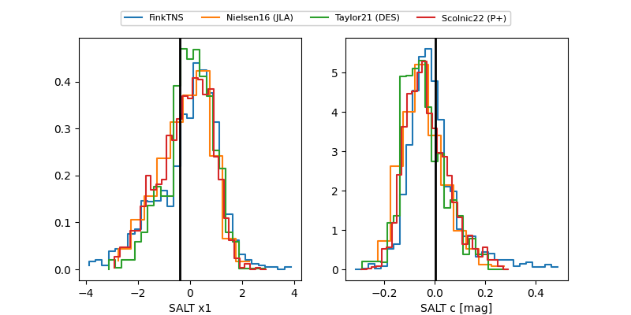

FINK: ZTF25abnkggp
Lasair: ZTF25abnkggp
ALeRCE: ZTF25abnkggp
TNS: 2025wwi
YSE: 2025wwi
ZTF25abnkggp (ztf,fink)
2025wwi (tns,yse)
equatorial (ra, dec) = (130.7748,+38.18828)
galactic (l, b) = (184.0923,+37.54617)

last ztfr=19.68
8 ztfr detections